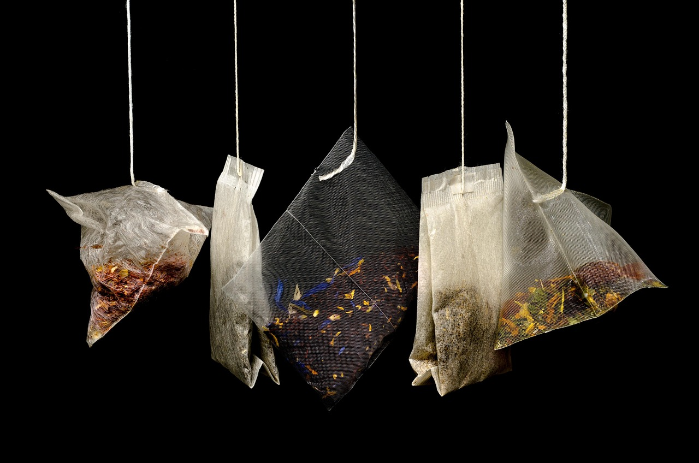
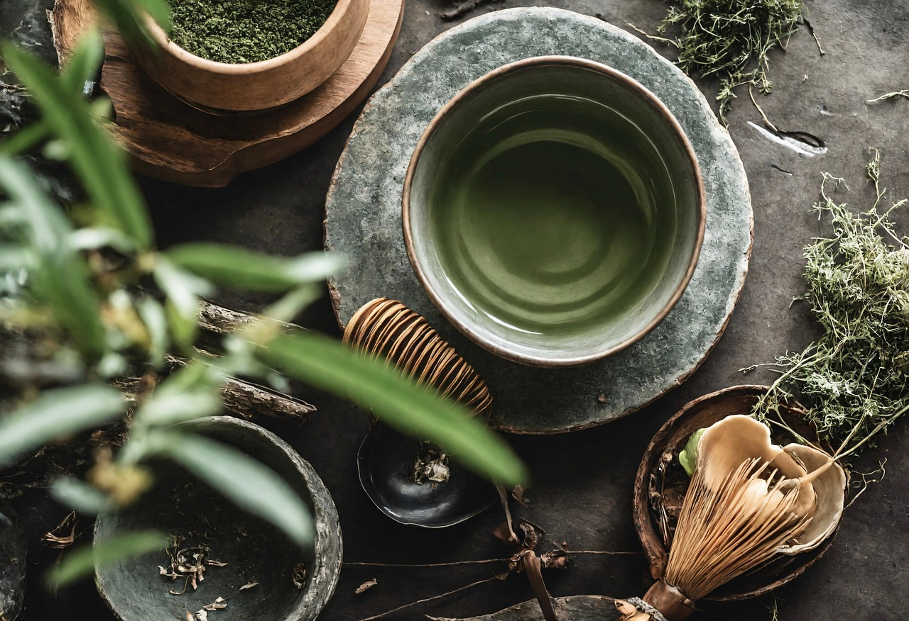
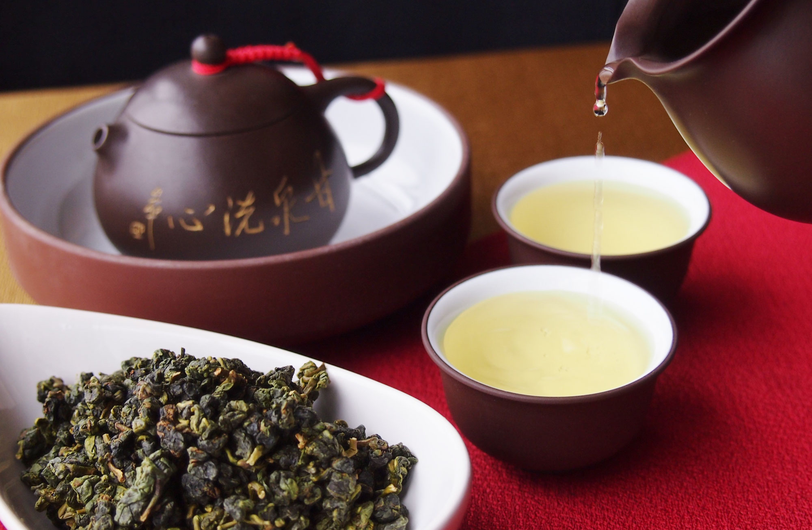
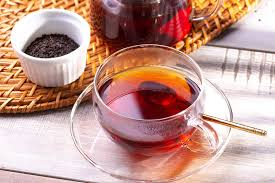

CONCEPT
Teahouseとは
「Teahouse」は、“静けさ”と“つながり” をテーマにした、都会の中の小さな隠れ家カフェ。
世界各国の茶文化を融合させた空間で、それらの飲み物に合ったデザートもご一緒に楽しんで頂けます。
Teshouseという名の通り、訪れた人が“自分の家のようにゆっくりくつろぐ時間”を過ごせるように設計されています。
あなたのお気に入りのあちゃがきっと見つかります。お茶の素晴らしさ、面白さをぜひご体験ください。

MENU

碧螺春（ビローチュン）
果樹園に囲まれた環境で育つため、桃・梨・柑橘などの自然なフルーティーな香りをまとった緑茶。若い芽と柔らかい葉を摘み、手作業で小さな螺旋状に丸める。茶葉表面には白い産毛が多く、抽出すると甘く爽やかな花香が立ち上がる。軽やかでありながら余韻が長いことから、高級茶として世界的に評価が高い。

抹茶
覆下栽培によって渋み成分カテキンが減り、旨味成分テアニンが増えるため、濃厚でまろやかな味になる。茶葉は「てん茶」に加工され、石臼で非常に細かい粉末に挽く。茶道では点て方や道具に流派があり、濃茶（こいちゃ）と薄茶（うすちゃ）で作法も異なる。カフェ文化により海外でも人気で、スイーツや料理にも幅広く利用されている。

高山茶
標高1,000〜2,000m以上の高冷地で栽培される烏龍茶。低温で日照時間が短いため、葉がゆっくり育ち、肉厚で香り豊かになる。淹れた瞬間に花のような甘い香りが立ち、透明感のある爽快な味わい。高山の霧に含まれるミネラルを吸収していると言われ、雑味が少なく清らかな後味が特徴。台湾茶の中でも品質の高さで特に人気。

ダージリン
ヒマラヤ山麓の標高の高い茶園で栽培される紅茶。収穫時期によって風味が大きく変わることで有名。
・ファーストフラッシュ：春摘み。緑茶のように爽やかで若々しい香り。
・セカンドフラッシュ：夏摘み。マスカットのような甘い香り。
・オータムナル：秋摘み。熟成感のある落ち着いた味。

アールグレイ
紅茶にベルガモットという柑橘の香りをつけたフレーバーティー。柑橘の皮から抽出した精油または香料を使い、華やかでエレガントな香りが漂う。ベースの茶葉はダージリン、セイロン、アッサムなどさまざま。ストレートはもちろん、ミルクティー・アイスティーでも人気。ヨーロッパのティータイム文化を象徴する存在。
ABOUT
| 営業時間 | 10:00 ~ 20:00（L.O. 19:30） |
|---|---|
| 定休日 | 毎週月曜日、第2木曜日 |
| 支払方法 | 現金、クレジットカード、電子マネー(Paypay) |
| 予約 | 予約不可 |
| 電話番号 | 123-4567-8900 |
| 駐車場 | お近くのパーキングをご利用ください |
| 住所 | 東京都足立区若松55-5 |